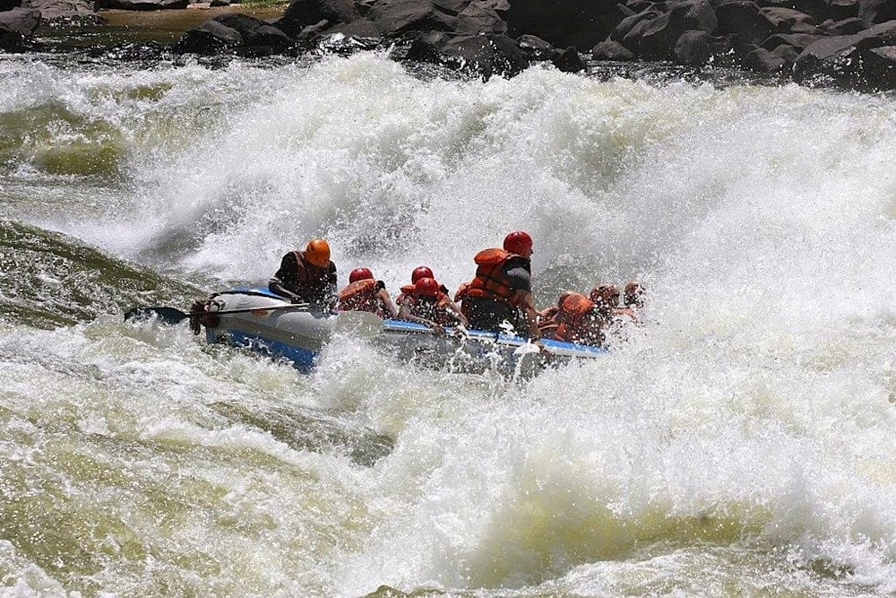

Tourism is the best way of having a great holiday away from work. The objective of my company is to give you a bespoke adventure tailored towards your budget but filled with fun; that is why our motto is: "Your happiness is our pride". For further details click on this Contact.
Elharaby Rafting Company
Trips Location
Available Trips
| Trip Name | Duration | Price | Description | Availability |
|---|---|---|---|---|
| Fatalefu River | 7 Days | $1,200 | A relaxing trip to the sunny beaches of Hawaii. | Available |
| zambezi river rafting | 5 Days | $800 | Experience the thrill of mountain hiking and camping. | Available |
| Salmon River | 3 Days | $600 | Explore the vibrant city life of New York. | Fully Booked |
Salmon River
Salmon River – Middle Fork Where: Idaho, USA Why: The best multi-day river trip in the world Level: Class III-IV When: June to August This 105-mile journey through the largest roadless section of the USA outside Alaska offers near-continuous whitewater, with up to 100 rapids set amongst stunning spruce forests and valleys deeper than the Grand Canyon.

Zambezi River
Zambezi River – Batoka Gorge Where: Victoria Falls, Zambia/Zimbabwe, Africa Why: The world’s most intense one-day whitewater trip Level: Class IV-V When: June to March One of the most raft-mangling rivers on the planet, this is not a place to be taken lightly. Rafting operators nickname it the ‘Slam-bezi’ for good reason.
Fatalefu River
South America Fatalefu River – Bridge-to-Bridge Where: Chile, South America Why: The biggest white water day in South America Level: Class III-V When: December to March Pristine azure-blue glacier-fed waters surrounded by Patagonian mountains with grades for all levels make this a stunning rafting destination. The river runs for 40 miles, with four separate sections including the 4.3-mile Bridge-to-Bridge zone, which has been compared to running all of the toughest Grand Canyon rapids – in a single day.